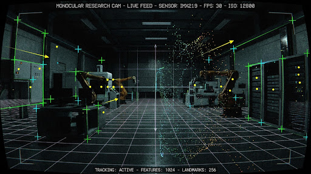

Visual-Inertial Odometry & 50 Hz Cascaded Controller
MSCKF NominalMonocular visual-inertial state estimation with explicit body TWB vs camera TWC frame decomposition and cascaded closed-loop SO(3) geometric tracking.
VIO Estimator Telemetry
Extrinsics TBC
Camera Intrinsics
Estimator Rate:200 Hz IMU / 30 Hz Cam
Tracked Features 87.5% Trk
248 / 280
KLT Feature Tracker
VIO Filter Rate
60.0 Hz
< 1.2 ms filter innovation
Sliding Clones
11 / 15
MSCKF State Vector
Total Path Length
142.8 m
Integrated Body TWB
Reprojection Residual
0.42 px
Nominal bounds (< 1.0 px)
Frame Relationship:TWC = TWB · TBC|TBC: [+0.10, 0.00, -0.04]m
Covariance Trace: 1.42e-4 • Scale Drift: 0.18%
Monocular Optical Feed
/camera/image_raw30 FPS•14 ms

KLT TRACKER: 248 pts
FOV: 92.4° H | 74.1° V
Pinhole Model (fx=615, fy=615)
TWC CAMERA OPTICAL FRAME
3D Spatial Map & Trajectories
P_WB: [ x: 4.00, y: 0.00, z: -2.00 ] m
V_WB: [ vx: 1.25, vy: 0.10, vz: 0.02 ] m/s
MSCKF SLIDING MAPLANDMARKS: 442
Position & Frame Transforms
Cov: ±0.04mBody Pos (TWB) [X, Y, Z][+4.00, +0.00, -2.00] m
Camera Pos (TWC) [X, Y, Z][+4.10, +0.00, -2.04] m
Extrinsic Offset TBC[+0.10, 0.00, -0.04] m
Integrated Distance188.42 m
Linear Kinematics & IMU Accel
ADIS-16470Linear Velocity [Vx, Vy, Vz][+1.25, +0.10, +0.02] m/s
Total Ground Speed1.25 m/s (4.5 km/h)
Linear Accel [Ax, Ay, Az][+0.12, -0.04, +9.81] m/s²
Estimated Accel Bias±0.0024 m/s²
Attitude & Angular Rates
SO(3) QuatEuler Angles (Roll, Pitch, Yaw)R: +1.2° | P: -3.8° | Y: 142.6°
Angular Rates [p, q, r][0.01, -0.02, 0.05] rad/s
Quaternion [qw, qx, qy, qz][0.998, 0.012, -0.018, 0.045]
Estimated Gyro Bias[-0.0004, 0.0011, -0.0002] rad/s
50 Hz Cascaded Closed-Loop Flight Controller
50 Hz ActivePosition Error (ep, ev) → Desired Force Fd → Attitude Gen (b3d, Rd) → SO(3) (eR, eω) → Moment Md → FSM → /ap/v1/cmd_vel
FSM State:NAVIGATING
1. Position Loopep = p − pd
Pos Error ‖ep‖:0.42 m
Vel Error ‖ev‖:0.18 m/s
Target pd:[20.0, 5.0, 20.0]m
2. Attitude Generatorb3d = Fd / ‖Fd‖
Desired Force ‖Fd‖:14.72 N
Thrust Direction b3d:[0.02, -0.01, 1.00]
Desired Quat qd:[1.0, 0.0, 0.0, 0.0]
3. Geometric SO(3)eR = ½(RdTR − RTRd)∨
Attitude Error ‖eR‖:0.024 rad
Rate Error ‖eω‖:0.015 rad/s
Desired Moment ‖Md‖:0.118 N·m
4. Safety & FSMWATCHDOG OK
Heartbeat:50.0 Hz Nominal
Command Output:/ap/v1/cmd_vel
Vehicle Mass & J:1.50 kg • diag[0.02,0.02,0.04]
Live Kinematic Waveforms (Rolling 20-Second Window)
Real-time linear acceleration (ax, ay, az), velocity (vx, vy, vz), and world position (x, y, z)
Linear Acceleration (m/s²)
AX: +0.12AY: -0.04AZ: 9.81‖A‖: 9.81
Linear Velocity (m/s)
VX: +1.25VY: +0.10VZ: +0.02‖V‖: 1.25
World Position (m)
X: +4.00Y: +0.00Z: -2.00‖P‖: 4.47
ROS 2 Computational Graph & Topic Interfaces
Verified topic contracts from drones-controller & VIO ROS 2 architecture
| Node Name | Topic | Message Type | Rate | Direction | Status |
|---|---|---|---|---|---|
| drones_controller_node | /drones_controller/position_error | geometry_msgs/Vector3 | 50.0 Hz | Published | Active |
| drones_controller_node | /drones_controller/desired_force | geometry_msgs/Vector3 | 50.0 Hz | Published | Active |
| drones_controller_node | /drones_controller/attitude_error | geometry_msgs/Vector3 | 50.0 Hz | Published | Active |
| drones_controller_node | /ap/v1/cmd_vel | geometry_msgs/TwistStamped | 50.0 Hz | Command Out | Active |
| vio_msckf_estimator | /drone/vio/odometry | nav_msgs/Odometry | 60.0 Hz | Published | Active |
| camera_driver_node | /camera/image_raw | sensor_msgs/Image | 30.0 Hz | Published | Active |
| imu_adis16470_publisher | /imu/data_raw | sensor_msgs/Imu | 200.0 Hz | Published | Active |